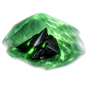

Wiki / Stat Reference / Research Tree / Whisper Veil Cloak MK III

Research Tree
Whisper Veil Cloak MK III
Refined stealth rig that ghosts you off every screen in range.
- Category
- Special
- Tier
- Tier 3 Advanced
- Faction
- Shadow Brokerage
Research Cost Minerals
450
Lab Time
7m 30s
Required Lab Level
3
Required Player Level
6
Cost & Build Time
- Lab Time
- 7m 30s
- Research Cost Minerals
- 450
- Research Cost Helium
- 70
- Research Cost Antimatter
- 15
Requirements
- Prerequisite
- Blackledger Void Damper MK II
- Mutually Exclusive
- —
- Required Lab Level
- 3
- Required Player Level
- 6
- Root Node
- No
- Hidden
- No
Unlocks
- Unlocks Weapon
- —
- Unlocks Armor
- —
- Unlocks Shield
- —